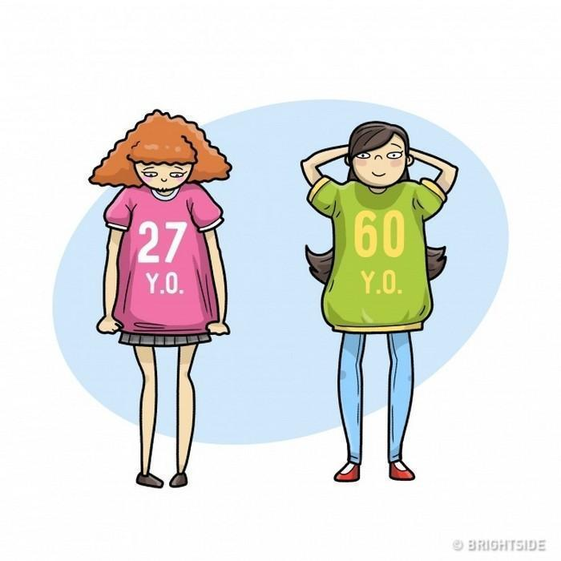
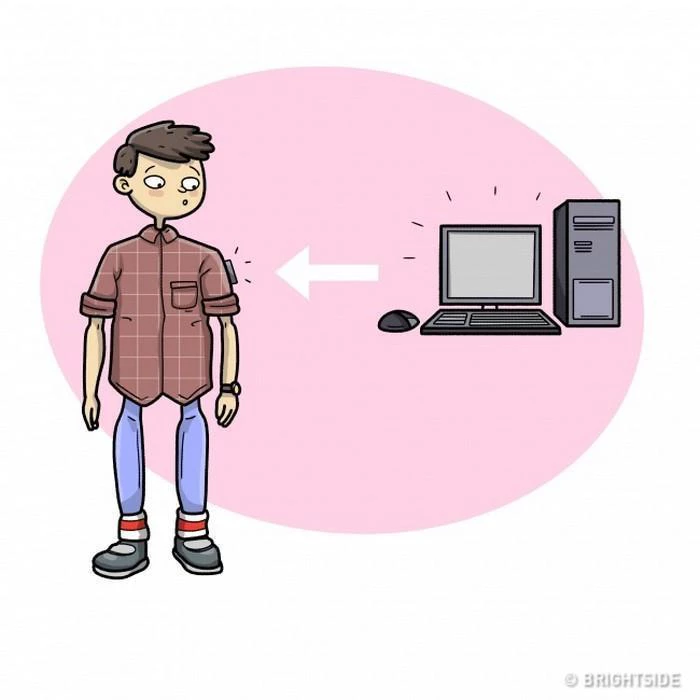
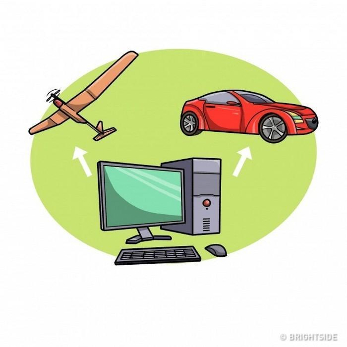

Por Letícia Flores
Atualizado em 5 de Fevereiro de 2018
Não é difícil imaginar como a tecnologia pode transformar o mundo em que vivemos hoje. Existem inúmeros filmes, séries, livros e previsões realistas sobre o que nos espera no futuro. O inventor e futurologista Ray Kurzweil tem feito previsões científicas bastante assertivas a respeito disso desde 1990.
Por ser um dos funcionários do Google encarregado de novos projetos que envolvem o aprendizado de máquinas e processamento de dados, o caminho da tecnologia torna-se muito mais evidente diante de seus olhos.
Ele previu a dissolução da União Soviética, a interface de assistentes digitais dos sistemas operacionais de celulares (como a Siri, por exemplo), bem como sistemas de realidade virtual aumentada.
Das 147 previsões feitas em livros publicados nos anos de 1990, 1999 e 2005, 115 concretizaram-se exatamente da maneira como ele descreveu.
Agora, ele faz novos palpites assertivos sobre o que nos espera na Era Digital desde 2019 até 2099. Algumas coisas parecem óbvias; outras, assustadoras. Bora conferir?
2019
2020
2025